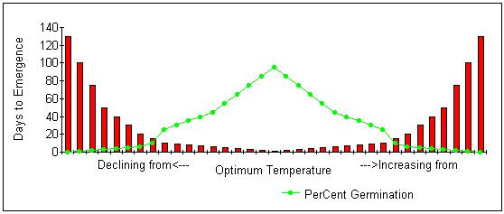

The discussion in this article is not about stratification methods or temperatures. The removal or destruction of germination inhibitors is well described in other articles.
The chart below displays the relationship between soil temperature, days to emergence, and the percentage of sown seeds to germinate:

As you might expect, the percentage of any seeds to germinate is maximum at the optimal temperature for that species. As the temperature declines or advances from the optimal temperature, two things happen at the same time. While the percentage of seeds to germinate decreases, the number of days to germination increases. That is the fundamental relationship between germination and temperature.
For every species of seed, there is an optimal soil temperature for germination, and at that temperature, the maximum number of seeds will germinate and in less time than at any other temperature.
You can sow onion seeds at 32ºF and get 90% germination. So, why don't we do that? The answer is in the following table.
Percentage of Normal Vegetable Seedlings
Produced at Different Temperatures* **
Numbers in ( ) are the days to seedling emergence. Number in red = optimal daytime soil temperature for maximum production in the shortest time.
| Crops | 32ºF | 41ºF | 50ºF | 59ºF | 68ºF | 77ºF | 86ºF | 95ºF | 104ºF |
|---|---|---|---|---|---|---|---|---|---|
| Asparagus | 0 | 0 | 61(53) | 80(24) | 88(15) | 95(10) | 79(12) | 37(19) | 0 |
| Beans, lima | 0 | 0 | 1 | 52(31) | 82(18) | 90(7) | 88(7) | 2 | 0 |
| Beans, snap | 0 | 0 | 1 | 97(16) | 90(11) | 97(8) | 47(6) | 39(6) | 0 |
| Beets | 0 | 53(42) | 72(17) | 88(10) | 90(6) | 97(5) | 89(5) | 35(5) | 0 |
| Cabbage | 0 | 27 | 78(15) | 93(9) | 0(6) | 99(5) | 0(4) | 0 | 0 |
| Carrots | 0 | 48(51) | 93(17) | 95(10) | 96(7) | 96(6) | 95(6) | 74(9) | 0 |
| Cauliflower | 0 | 0 | 58(20) | 60(10) | 0(6) | 63(5) | 45(5) | 0 | 0 |
| Celery | 0 | 72(41) | 70(16) | 40(12) | 97(7) | 65 | 0 | 0 | 0 |
| Cucumber | 0 | 0 | 0 | 95(13) | 99(6) | 99(4) | 99(3) | 99(3) | 49 |
| Eggplant | 0 | 0 | 0 | 0 | 21(13) | 53(8) | 60(5) | 0 | 0 |
| Lettuce | 98(49) | 98(15) | 98(7) | 99(4) | 99(3) | 99(2) | 12(3) | 0 | 0 |
| Muskmelon | 0 | 0 | 0 | 0 | 38(8) | 94(4) | 90(3) | 0 | 0 |
| Okra | 0 | 0 | 0 | 74(27) | 89(17) | 92(13) | 88(7) | 85(6) | 35(7) |
| Onions | 90(136) | 98(31) | 98(13) | 98(7) | 99(5) | 97(4) | 91(4) | 73(13) | 2 |
| Parsley | 0 | 0 | 63(29) | 0(17) | 69(14) | 64(13) | 50(12) | 0 | 0 |
| Parsnips | 82(172) | 87(57) | 79(27) | 85(19) | 89(14) | 77(15) | 51(32) | 1 | 0 |
| Peas | 0 | 89(36) | 94(14) | 93(9) | 93(8) | 94(6) | 86(6) | 0 | 0 |
| Peppers | 0 | 0 | 1 | 70(25) | 96(13) | 98(8) | 95(8) | 70(9) | 0 |
| Radish | 0 | 42(29) | 76(11) | 97(6) | 95(4) | 97(4) | 95(3) | 0 | 0 |
| Spinach | 83(63) | 96(23) | 91(12) | 82(7) | 52(6) | 28(5) | 32(6) | 0 | 0 |
| Sweet Corn | 0 | 0 | 47(22) | 97(12) | 97(7) | 98(4) | 91(4) | 88(3) | 10 |
| Tomatoes | 0 | 0 | 82(43) | 98(14) | 98(8) | 97(6) | 83(6) | 46(9) | 0 |
| Turnips | 1 | 14 | 79(5) | 98(3) | 99(2) | 100(1) | 99(1) | 99(1) | 88(3) |
| Watermelon | 0 | 0 | 0 | 17 | 94(12) | 90(5) | 92(4) | 96(3) | 0 |
* The above data was taken from a report published in the mid-1980's. Author, affiliation, and publisher are not known.
** The above table was derived from experimental data. Certain logical inconsistencies exist due to crop failure or to bad batches of seed. They do not interfere with the overall interpretation.
Sowing seeds outdoors when the soil temperature is optimal for maximum percentage germination is the wrong strategy in some cases. Sowing watermelon seed when the soil temperature reaches 95ºF will not leave enough growing season for the fruit to mature in zone 5. Similarly, sowing lettuce when the soil temperature reaches 77ºF will prevent crisphead lettuces from forming heads due to the hot weather. Some crops may be sown in either Spring or Fall, or both. Others have a long growing season, and only one crop is possible. Different sowing dates and different varieties have been developed to suit each growing zone. Your County Agricultural Extension Agent will always have the best information for your location (at no charge to you).
The average gardener finds the optimal germination temperature for any seed printed on the seed packet or in the seed catalog. Sometimes, the instructions offer only a month to sow outdoors, or the number of weeks before last frost to sow indoors. When the sun warms the soil outdoors to the proper level, those seeds will germinate. The term "indoors" usually refers to room temperature. But room temperature is different for every family, and for many families, setback thermostats heat the indoors to a significantly lower temperature at night. What room temperature means is 68 to 72ºF held constant. But it is soil temperature that invites the seeds to germinate, not air temperature. Because of constant moisture loss to the atmosphere, the soil temperature is always cooler than the air temperature. Remember that evaporation cools the media holding the moisture. If your home is on the low side of 68 to 72ºF, your seeds will benefit from bottom heat.
As a general rule, seeds will germinate indoors where the soil temperature is held constant. In nature, the soil temperature is usually lower at night. Therefore, an indoor drop in temperature at night of less than 10ºF will not significantly delay seedling emergence. There are exceptions to every rule. Cleome seeds prefer oscillating temperatures. Vinca rosea likes three days at 80ºF after which it will germinate at room temperature. But, the exceptions are few. To start seeds reliably indoors, one needs access to several environments. The refrigerator can be relied on to supply 37 to 40ºF. Your room temperature is another steady enrironment that will be ideal for some seeds. There are just as many species however, that prefer 55ºF, 60ºF, 65ºF, 75ºF, or 80ºF, or even 85ºF in some cases. The question for many beginning seed starters is how one provides alternative environments to room temperature.
Cyclamen, Delphinium, and Geranium species, for example, prefer temperatures cooler than room temperature, and frequently can be started on windowsills. Capsicum, Impatiens, and Lycopersicon species, for example, prefer temperatures warmer than room temperature, and usually do best started in heated propagators, on heat mats, on heating cables, the top of the refrigerator, or above a fluorescent light fixture where heat rises from the ballast. Many gardeners have constructed propagating chambers along the lines of herb dryers. A number of small light bulbs (7 to 15 watts) under the bottom shelf supply the heat, and the temperature can be controlled by the number of lights actually turned on. Each shelf consists of sturdy hardware cloth to support the seed pots while permitting the warm air to circulate upwards.
Starting a wide range of species indoors requires the gardener to manage at least four temperature zones. Besides the refrigerator and room temperature, I would suggest a 55 to 65 degree zone and a 75 to 80 degree zone. But, alternative temperature zones are not available to many gardeners, and they might have to get some help from the great outdoors:
Germination method #9 from my seed start scheduling database calls for a stratification temperature of 21ºF prior to a germination temperature of 53ºF. Method #14 requires 87ºF, etc. Where does the gardener find environments like these? The answer is outdoors during the period when the required temperature is available. To use the outdoors, the gardener will schedule seed sowing to coincide with the expected occurrence of the temperatures needed.
Some seeds require more than one year to germinate. Others, called multicycle germinators, require at least two cold stratification periods before germination; the hellebores are one example. Most members of the Ranunculus family require temperatures very close to the freezing point of the seed (~19ºF) for destruction of germination inhibitors. Some seed, like Cimicifuga require a long period of warm stratification before cold treatment. Other seed, like Myrrhis must be sown outdoors. Sowing of these types of seeds should be done outdoors, both for your own convenience, and for the greater degree of success in the germination of difficult species. But, I do not mean direct sowing in the ground necessarily, although that will be especially successful with Myrrhis, for example.
There are some gardeners that sow all their perennial seeds in pots out of doors. The pots must be protected from the sun and from loss of moisture, so there are some zones where it may not be practicable. Algae formation is usually minimized by using a larger size granite grit to isolate the soil media from the atmosphere. The special temperature zones required for some seeds are readily available as the seasons change, and if the gardener is in no particular hurry, there is much to be said for letting nature do the work. I prefer indoor seed starting myself, but I did find it necessary to direct sow 8 species last fall, and to sow 18 additional species in pots to be covered with snow. Those are what I call frost germinators.